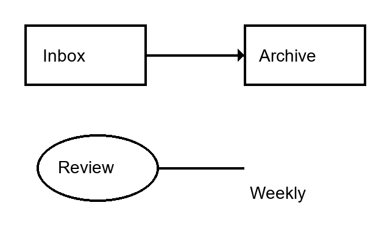

Draft translation: please check it with a native speaker before release.
یہ صفحہ OCR ڈیمو کا حصہ ہے۔ حیثیت: چارٹ کے لیے MVP؛ خاکے بعد کا مرحلہ ہیں۔
بار چارٹ اپنے عدد تصویر کے اندر رکھتا ہے۔ NoteCraft وہ الفاظ پڑھتا ہے جو پڑھ سکتا ہے، جیسے عنوان اور لیبل۔ بار ابھی عدد کے طور پر نہیں پڑھے جاتے۔
ہاتھ سے بنا خاکہ مشکل ہوتا ہے۔ اس کے الفاظ شاید پڑھے جائیں، مگر اس کے ڈبے اور تیر ابھی سمجھے نہیں جاتے۔
